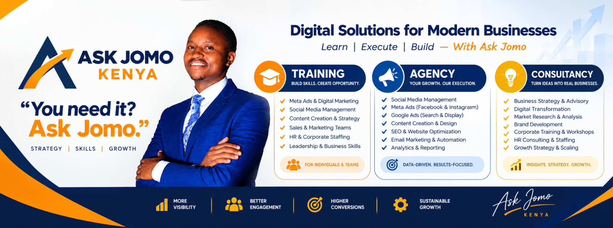

Training
Help yourself or your team use modern digital tools with confidence.
- AI tools and workplace productivity
- Digital marketing and social media
- Website skills, sales and business skills
- Corporate workshops and team upskilling
DIGITAL SOLUTIONS FOR MODERN BUSINESSES
Digital marketing, websites, AI skills and business strategy—made practical for people and organisations ready to move forward.
You need it? Just ask.
✓ Practical expertise Clear next steps Built around your goals

START WITH WHAT YOU NEED
Choose a path. We’ll help you work out the right next step—without the long sales process.
Help yourself or your team use modern digital tools with confidence.
Bring in a practical team to build your digital presence and attract customers.
Get expert direction before investing time, people or budget.
CONNECTED SOLUTIONS
Use one service or combine the right ones. Every engagement starts with your goals, audience and current stage.
Be easier to find. Earn attention. Turn interest into enquiries.
Build a credible home online that helps visitors take the next step.
Turn new tools into useful skills—not just another certificate.
Make better decisions about growth, operations and the people who deliver it.
BUILT AROUND YOUR MARKET
Choose your sector to start a focused conversation about your customers, goals and opportunities.
Tell us about your business →A SIMPLE CUSTOMER JOURNEY
No complicated package maze. Start where you are, then grow when it makes sense.
We learn about your business, audience and goal.
You get a practical next step based on your needs.
Train, execute or build—with a clear scope.
MEET THE PERSON BEHIND ASK JOMO
Joseph Gathiaka, known as Jomo, leads Ask Jomo Kenya with a practical focus on marketing, business growth and capability-building. The aim is simple: help individuals and organisations understand their options, make informed decisions and turn plans into action.
Ask Jomo brings training, agency execution and consultancy together, so you can learn a skill, get expert support or build a solution around the same business goal.
A detailed professional bio can be added after the CV is supplied and employment details are verified.LET’S MAKE THE NEXT STEP CLEAR
Answer a few quick questions. We’ll prepare a WhatsApp message with your details, so the conversation starts with context.
GOOD TO KNOW
Still deciding? Start with a conversation and we’ll help you identify a sensible next step.
Ask Jomo combines digital and corporate training, agency services such as digital marketing and website development, and consultancy for strategy, digital transformation and business growth.
Yes. Many digital services, training sessions and consultancy engagements can be scoped for remote delivery. Share your location and needs so we can confirm the best arrangement.
Yes. Training can cover practical AI tools, responsible use, prompting, workflow improvement and role-specific applications. Scope is agreed around your team’s needs.
Yes. Website development can be paired with technical SEO, content planning, analytics, paid campaigns and conversion improvements, depending on your goals and budget.
Pricing depends on scope, timelines, audience and level of support. Tell us what you need and we’ll guide you toward an appropriate starting point before confirming a proposal.
YOUR NEXT STEP STARTS HERE
Tell Ask Jomo what you want to achieve. Let’s find the right way forward.